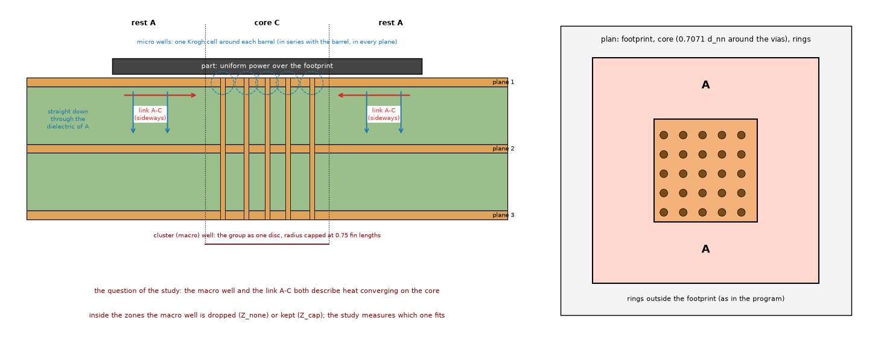

PCB Thermal Lab simulates the temperature of a printed circuit board: you draw the board, its copper, the parts that dissipate power, the vias and the heatsinks, choose how it is cooled, and the program gives the temperature maps, the junction temperature of each part, how it evolves in time and how much margin is left. This guide explains what every parameter means, what each model does and what it can and cannot do. Hover the pointer over any field in the program for a short description of it.
| Area | What it is |
|---|---|
| Board settings dock (left) | Board size, outline, environment and materials. |
| Side panels | Board, Simulation and Properties scroll when the window is short (and sideways when a panel is made narrower than its fields): use the mouse wheel over a panel (or enlarge the window) to reach the last boxes, for example Position and size of the selected element. Drag the edge of a dock to resize it; the program remembers the size and place of the docks for the next start. |
| Elements dock (left, below) | List of all zones, heaters, heatsinks and vias; click to select, right-click for actions. |
| Tabs in the middle | Board: the drawing canvas with rulers and a scale bar. Stack-up: the vertical cross-section and the layer table. Power profile: power in time per heater. Results: maps, tables, comparison, animation. |
| Simulation settings dock (right) | Models to run, cell size, solver settings, and below them, always in sight, Run and Cancel, the progress and the live input warnings (the validity of the design, the limits of the models you selected and the via warnings, checked before any run and again when you change the models or the cell; the Results summary repeats them and adds what only a run can tell): each warning is one line (for example U1: 9 vias under the footprint; the Lumped model is approximate here (-21 to +33 % of the via effect); use the FVM); hold the mouse on it for the full measured text, which is also what the Results summary holds; one line for a single warning, a list for several (click a warning to select the element it is about, on its layer; after an edit the list is checked again a moment later, and until then a click does nothing). In a low window the list shrinks to two lines and scrolls, so that Run and the settings stay in sight. |
| Properties dock (right, below) | All fields of the selected element. |
| Tool bar | Drawing tools, polygon mode, the layer being drawn, snap, fit, grids, temperature overlay and Run. |
Numbers are always written with the decimal point and without a thousands separator (0.45, 1234.5), whatever the language of the system. A decimal comma typed or pasted in a number field (with the keyboard or with Paste of its right-click menu), or typed in a Preferences table, is read as a point (0,45 is 0.45). Sizes from 0.01 up to but not including 10000 are written in plain decimal (zero is 0); smaller and larger ones are written in engineering notation, with the exponent a multiple of three and two decimals in the mantissa, trailing zeros kept: 10.03E-3, 10.00E-6, 10.04E3, 120.50E6. This applies to the tables, labels, warnings, reports (for example the Balance column of the Summary, +10.00E-15) and the tick labels of the plots; the unit stays in the axis label. The files (.pcbt.json, CSV) keep the usual float text so that other programs read them.
The rulers along the top and left edges of the board show millimetres from the lower-left corner and follow the zoom; the bar at the bottom left shows a round length (for example 10 mm) at the current zoom. Elements cannot be dragged off the board. The calculation runs in a separate process so the window never freezes; when the program closes nothing is left running.
| Field | Meaning |
|---|---|
| Width, Height (mm) | Size of the box that contains the board (the board itself can be any shape inside it, see the outline). |
| Field | Meaning |
|---|---|
| Ambient (°C) | Air temperature. All results are temperatures above it. |
| Heat transfer | Typed by me: you give one coefficient for the top face, one for the bottom and one for the edges. Computed: the program computes the coefficient of each face from the board temperature, with natural or forced convection correlations plus radiation, repeating the solve until the coefficients settle. |
| h top, h bottom (W/m²K) | Coefficient of each face (convection plus radiation). Natural convection in still air is about 5 to 15 W/m²K. Shown only when typed: in computed mode the program derives them (the typed values would only be a starting guess). |
| Orientation | (Computed.) Horizontal: layer 1 is the top face and looks up, the last layer looks down (the mounting follows from the layer numbering: for an upside-down board number the layers the other way round), or vertical (on its edge). Tilted boards are not considered. A hot face looking up loses heat better than one looking down; typed coefficients ignore the orientation (type the h of the real mounting). A tilted board and an enclosure are not modelled. |
| Vertical natural convection | (Computed, vertical orientation only.) The correlation of the natural convection of a vertical board: General (Churchill and Chu, the form for the whole Rayleigh range; what earlier versions used and what an old project file without the setting keeps) or Laminar (the same authors' laminar form, for Ra below 1.00E9, which textbooks recommend for laminar flow; the default of new projects). The laminar coefficient is +6.5 % (a 50 mm board, 10 K) to −10 % (200 mm, 80 K) of the general one, but on the example board turned vertical it changes the rise by only −0.7 to +0.2 %, far inside the 20 to 30 % uncertainty of h. Above Ra 1.00E9 (a board of about 0.5 m) the laminar form is out of its range and the program warns. The general form matches the library ht; the laminar form matches the laminar boundary-layer solution of a vertical plate; the 1975 paper itself has not been opened. Command line: --natural-form general|laminar. After a run, a vertical board with computed coefficients whose face Rayleigh number is below 1.00E3 (a face about 10 mm high at a 10 K excess) gets a warning that the coefficient is not checked there; a face cooled mainly by forced air is not counted. |
| Emissivity top / bottom (0 to 1) | (Computed.) Radiation: solder mask and FR-4 about 0.9, bare copper 0.05 to 0.1. |
| Air speed (m/s) | (Computed.) 0 is still air (natural convection); above 0 forced convection along the board. |
| Convection × (factor) | (Computed.) Multiplier of the convection (not of the radiation), to fit a measurement. |
| Edges lose heat / h edges | Whether the board edges exchange heat with the air and with which coefficient. |
The simple stack-up and the materials are on the Stack-up tab, in the boxes on the right of the cross-section: Simple stack-up (total thickness, number of copper layers, copper per layer) and Materials.
| Field | Meaning |
|---|---|
| Total thickness (mm) | Total thickness of the board. In the simple stack-up the copper and the dielectric gaps share it; in the advanced stack-up it is the sum of the layers and is read-only. |
| Copper layers | Number of copper layers (1 to 12). Layer 1 is the top face, the last is the bottom face. |
| Copper per layer (µm) | Copper thickness of every layer: 17.5 µm = 0.5 oz, 35 µm = 1 oz, 70 µm = 2 oz. Different values per layer: advanced stack-up. |
| Copper k (W/mK) | Thermal conductivity of copper (385 to 400). |
| Laminate preset | Typical dielectric materials; fills the next three values (indicative values, not from your datasheet). |
| Dielectric k through (W/mK) | Conductivity across the board between copper layers (FR-4 about 0.3): sets the resistance between layers. |
| Dielectric k in-plane (W/mK) | Conductivity along the plane (FR-4 about 0.9, glass weave). |
| Via plating (µm) | Copper plating of the via barrel, typically 20 to 25 µm. |
Simple (default): all the dielectric gaps are equal and made of the same material; the boxes on the right of the Stack-up tab set the total thickness, the copper thickness (same for every layer) and the dielectric properties. This is the model of earlier versions, unchanged.
In the advanced stack-up the thickness, the copper per layer and the dielectric rows of the boxes disappear (they are set layer by layer in the table); the number of layers, the copper conductivity and the via plating stay.
Advanced (Stack-up tab, Stack-up list): every copper layer has its own thickness and every dielectric gap its own thickness and material (conductivity through the thickness and in the plane, density, specific heat). Switching to Advanced keeps the same board (the gaps start equal); switching back keeps the total thickness. All five models use the advanced stack-up.
| Preset (typical, indicative) | k through | k in-plane |
|---|---|---|
| FR-4 standard | 0.3 W/mK | 0.9 W/mK |
| FR-4 high Tg / filled | 0.4 | 1.0 |
| Polyimide (flex) | 0.15 | 0.15 |
| PTFE ceramic (RO4350B type) | 0.69 | 0.69 |
| Metal-core dielectric | 2 | 2 |
| Alumina ceramic 96 % | 24 | 24 |
| Aluminium nitride | 170 | 170 |
The vertical resistance of the board between two copper layers is the sum of thickness / k of the gaps in between, so a thin prepreg under a hot part and a thick core elsewhere give very different results from equal gaps.
In the model every copper layer is one node that represents its copper and half of each adjacent dielectric.
When you change the number of copper layers the program loads a typical stack-up for that count (and the Load typical stack-up button on the Stack-up tab does it again, undoably):
1 layer on 1.6 mm laminate; 2 layers 1.6 mm; 4 layers 1.6 mm (35 / 15.2 / 15.2 / 35 µm copper with a 1.065 mm core and 0.21 mm prepregs, the JLCPCB build); 6 and 8 layers 1.6 mm; 10 layers 2.0 mm; 12 layers 2.4 mm (8 layers and more with a high-Tg laminate).
They are typical numbers to start from, not your fabricator's stack-up: replace them. The defaults live in pcbthermal/data/stackups.json (copper per layer, and for each gap the kind core or prepreg, the thickness and the material): edit that file to change them.
In the simple stack-up a layer change loads the total thickness and the outer copper only.
Inner copper. The Inner copper choice on the Stack-up tab (advanced stack-up, 3 or more layers) picks the finished inner copper of the typical stack-ups: 0.5 oz (15.2 µm), the default, which reproduces the 4-layer template of the program; or 1 oz (35 µm), the figure listed by PCBWay, PCBGOGO, Bittele and AdvancedPCB. The 1 oz set is derived from the shipped templates: the dielectrics keep their thicknesses (fabricators do not thin the dielectrics in proportion for 1 oz copper, they pick another build, and keeping the dielectrics is the rule closest to their 1 oz builds), so the board is thicker than the nominal by about 0.02 mm per inner layer (1.586 to 1.626 mm for 4 layers); it is not a JLCPCB product table (JLCPCB's own 1 oz inner copper is about 30 µm). With a plane on every inner layer it makes the board about 7 K (10 to 13 % of the rise) cooler; with copper only on the outer layers it changes the result by less than 0.3 K. Choosing it reloads the typical stack-up (undoable).
Between two copper layers there is glass-reinforced epoxy (FR-4: woven glass cloth in epoxy resin) as a core (cured laminate with copper foil on both faces) or prepreg (glass cloth with resin that flows and bonds the layers in lamination). The weave makes it anisotropic: about 0.3 to 0.4 W/mK through the thickness and 0.8 to 1 W/mK along the plane. The outer copper is a foil plus plating (18 µm + 17 to 20 µm = the finished 35 µm of 1 oz); inner 0.5 oz copper finishes at 15 to 17.5 µm. The solder mask (15 to 25 µm) is not modelled: its resistance is a thousandth of the air film's. Metal-core boards and ceramics are chosen as dielectric materials.
A prepreg (glass cloth with resin) becomes a dielectric sheet like a core after lamination, so it enters as its pressed thickness (smaller than the nominal one, because resin flows into the etched copper) and its conductivity (about 0.25 to 0.35 W/mK, the same FR-4 values by default). Several sheets in one gap are optional (a gap is normally one sheet); when used they are combined: thicknesses add, the through-board conductivity is the series value and the in-plane one the parallel value. The effect on the temperature is small (±30 % in the dielectric conductivity gives about ±1 %; ±10 % in thickness ±0.4 %); the copper weight (±15 % gives ±5 %) and the vias matter more.
The diagram shows the layers from the top face to the bottom face with their thickness in micrometres and millimetres and the total board thickness. Units chooses µm, mm or both; Scale chooses "true proportions" (35 µm copper next to 1.5 mm of laminate is a thin line) or "readable" (thin layers enlarged to stay visible). Click a layer to see its thickness, conductivities, density and specific heat and what is drawn on it.
By default the board is the whole width × height rectangle. For another shape (L, T, round, chamfered corners, any polygon) use Board outline in the Board panel: pick a preset, edit the vertices in the table (millimetres from the lower-left corner of the box), or draw it with the outline tool (O, rectangle or polygon mode). Outside the outline there is no board: no copper, no heat, no heat loss.
| Element | What it is | Fields |
|---|---|---|
| Copper zone (Z) | Copper area on one layer (any polygon). It spreads the heat sideways and, on an outer layer, also radiates and convects it. | Name, layer, position and size, copper fill (1 = solid, 0.5 = hatched). |
| Heater (H) | A part that dissipates power: the power is spread exactly over its footprint on one layer. | Name, layer, position and size, power (W), and the part fields of the next section. |
| Heatsink (C, cooling) | Extra heat transfer on an outer face inside a polygon (a finned plate, a cooled area). With a thickness it becomes a metal block pressed on the board. | Cooling model: Manual input (in Input as you give the extra h in W/m²K or the datasheet θSA in K/W, which sets h = 1/(θSA × area)) or Metal block (the program computes it: thickness, metal, the interface sheet between the board and the block, optional fins: height, thickness, pitch). |
| Via (V) | Plated through hole connecting all copper layers: it carries heat vertically through its copper barrel (in the FVM and FDM the barrel is reached through the mean temperature of the cells around it, so its effect no longer depends on the cell size). | Position, drill diameter (mm; the plating is inside it, so the finished hole is the drill minus twice the plating) and Fill: Open, Epoxy resin, Conductive paste or Copper (names only; choosing one fills in its typical conductivity in the field below, which you can change for that via; the typical values are a library in Preferences). A fabricator's “filled via” is normally an epoxy resin plug (often capped with plated copper so it can be soldered over): it keeps the hole closed but conducts about as little as FR-4 (0.3 W/mK), so for heat it is the same as an open via. A conductive paste (about 8 W/mK) adds 5 %; only an electroplated copper fill is a real heat path (a 0.3 mm via conducts 3.3 times more: 59 instead of 192 K/W through 1.6 mm). |
| Board outline (O) | Shape of the board (previous section). | Vertex table in the Board panel. |
Select an element to see and type its position, width and height (a rectangle) or its vertex count, box and area (a polygon). Drag the corner handles to reshape a polygon. The metal block spreads heat in the metal, has a heat capacity and touches the board only over the copper it overlaps through the interface resistance (grease or paste 0.3 to 0.5 K·cm²/W, gap pads 1.7 to 10).
A heater has a Type: Heat source or Component. A heat source is a power in watts over a footprint ("5 W and that is it"); the only other thing it has is the Interface under the source (solder, paste or adhesive between it and the board: a material or a resistance in K·cm²/W, divided by the footprint; direct contact if nothing is set). A component adds a junction, a package and, if you want, a heatsink on top, with the fields below. Switching a component to a source clears those fields (undoable). Boards saved before the types existed keep working: a heater with any component field set is a component.
| Field | Meaning and what the program does |
|---|---|
| θ junction-pad (K/W) | Junction-to-pad (junction-to-bottom) resistance of the part: take θJC(bot), the MOSFET's RθJC, θJ-L of a diode or Rth j-sp of an LED, never θJA (it includes the manufacturer's board and air). The program computes Tj = hottest board point under the part + P·θ (worst case: all the power goes into the board). The board itself does not change. |
| Package family | Choosing a family fills the typical θ junction-pad, θJC(top) and Tj max of that package (QFN 5 K/W, power QFN 3, DFN 10, D2PAK 0.75, TO-220 1.5, SOT-223 15, diodes SMA/SMB/SMC 20, 0603 resistor 1000) and shows them with their note below; they are indicative, not from your datasheet, and you replace them with the datasheet numbers. The typical values are a library in Preferences (Libraries - Package families): add a family or change a number there. |
| Tj max (°C) | Maximum junction temperature: the report gives the margin, the power limit (the dissipation that brings the part to its limit on this board) and a warning if exceeded. An optional field left at zero shows what zero means instead of the number: no limit here, not used for ψJB and the body thickness, no heatsink for θSA, the footprint for the contact area. |
| ψJB (K/W) | Junction-to-board characterisation parameter: second estimate Tj = T_ring + ψJB·P where T_ring is the mean board temperature in the ring 0.5 to 1.5 mm around the package. Useful when the datasheet gives only θJB or ψJB. |
| Power coefficient (%/K) | Power that changes with the junction temperature, P = P0 (1 + c (Tj − 25 °C)), solved together with the board; a MOSFET's Rds(on) rises about 0.3 to 0.7 %/K. Thermal runaway (no stable point) is detected and warned. Steady state only. |
| Heatsink (list), θJC top (K/W), Interface (K·cm²/W) with Interface material, Heatsink θSA (K/W) | The Heatsink list and the Air flow list below it offer typical heatsinks from catalogues, each with the flows its catalogue gives (natural, 1 m/s, 2 m/s) (a 10 × 10 mm pin-fin 11.4 K/W, TO-220 clip-ons 16 to 26 K/W, a 40 × 40 × 18 mm BGA heatsink 7.7 K/W in natural convection and 1.5 K/W at 2 m/s, and more; a library in Preferences with the source of each): choosing one fills θSA, which you can change (the air speed of the board does not change it: pick the flow that matches your case); None means no heatsink and Custom your own number. Without a datasheet value: θSA is roughly 500 to 800 cm³·K/W divided by the volume in natural convection (150 to 250 at 1 m/s). The boxes of the top path (Package top and Interface) appear as soon as θSA is above zero; the top path also needs θ junction-pad above zero. Heatsink on the package: the heat also leaves through the top, through θJC(top), the interface (divided by the footprint area) and the heatsink to ambient. Active only with θ and θSA. The board receives only the power the top does not take; the report gives the top-path power. The split is found by solving the board a few times for the heat it receives (on a small pad most of the heat goes up); if that does not converge the results carry the warning the top-path split did not converge. A bare mould carries about 1 % of the heat and is ignored (worst case). Steady state only. |
Processors and lidded packages: use the datasheet θJC as θJC top (it already includes the die, the paste under the lid and the lid's spreading), your paste as the interface, the lid area as the contact area, and the heatsink's θSA. No die geometry is needed. For a part without a θJC(top), type the body thickness and pick the body material: θ = thickness / (k × contact area), an upper bound (a plastic top carries about 1 % of the heat anyway; it matters with a heatsink).
The interface sheet: between a heatsink and the board or the package there is one dielectric sheet (paste or gap pad) with its own material and thickness: choose an Interface material preset (it fills the thickness and the conductivity), or type the thickness (mm) and the conductivity (W/mK); the resistance (K·cm²/W) is thickness / conductivity, and typing the resistance replaces the sheet.
Thermal paste or gap pad goes in two places: between the package top and a heatsink (the part's Interface field, with an Interface material preset) and between the board and a metal block (the block's interface). Typical values, K·cm²/W: good paste 0.33, default paste 0.5, soft gap pad 1.7, gap pad 5, hard gap pad 10, perfect contact 0.01 (a joint is thickness/conductivity plus contact resistances; on a package divide by its area). Under the package the solder and the thermal pad are inside the datasheet's junction-to-pad number.
| Field | Meaning |
|---|---|
| Models | Which models to run (section 9). FVM is the reference. |
| Cell size (mm) | Size of the solver cells. Smaller is more accurate and slower; Auto picks a quarter of the smallest part. The number of unknowns is shown. Halve it once to check the result does not change. Memory limit: before it solves, the program estimates the peak memory of the finite volume, finite difference and 3D solid models from their number of unknowns (the estimate has a safety margin but can be wrong by tens of percent; it is a fit to measurements on one machine) and compares it with a share of the physical memory of the computer, 60 % unless you change it in Preferences (Defaults for new projects - Solver, "Memory limit", 0.10 to 0.95; it belongs to the machine, so it is not saved in project files). The Gerber reader refuses a single Gerber, drill or ZIP-member file above Largest Gerber or drill file (Preferences, Defaults for new projects - Gerber import, 256 MB, 16 to 4096; real files are 0.01 to 2 MB, and the text of a file takes about twice its size in memory); this too is a setting of the machine and is not saved in project files. Below the cell size the panel shows, for each selected model, the unknowns and "about X GB of Y GB": green fits, amber is slow (tens of seconds or more), red is above the limit: that model will not run, Run is greyed (its tooltip says why) and the message gives the smallest cell that fits; Auto picks a quarter of the smallest part and, when that cell does not fit, enlarges it to the smallest cell that fits for every selected model, and says so (with the 3D solid selected, that can be much coarser than the other models need). A 3D solid next to other models is skipped with a warning and the others still answer; the 3D solid also never runs above two million unknowns. The animation and the power profiles are checked too (they need about twice the memory of a steady solve). If the estimate is above the memory available right now (other programs are using it) the program only warns, since the computer may swap. The Lumped and Analytic models are not checked. On the command line the same refusal exits with code 3 and the option --memory-fraction sets the limit; the environment variable PCBTHERMAL_MEMORY_BYTES states the memory when it cannot be read. The estimate of each model and, after the run, the measured peak of the process are written to the program's log (Python logger pcbthermal.memory, level INFO); the program itself does not show these lines, a script that calls the package sees them when it sets up logging. A fine cell is expensive; a calculation that takes too long can always be cancelled. |
| FVM solver | Sparse direct (exact, default), conjugate gradients, or SOR (slow, kept for comparison). With vias, and where the laminate is cut into sub-gaps, the SOR solves the cells of each via, and each plan column of cut cells, together as a block; if these blocks need too much memory (each block is inverted dense, about 75 bytes times the square of its unknowns, 1.9 GB for a block of 5000 unknowns, and the inverses of all the blocks may take at most a quarter of the memory limit) the program solves the board with the direct solver instead and says so in the summary (SOR not used). The SOR relaxation factor is chosen by the program (an estimate of the optimum, on the safe side); it changes the number of sweeps, not the temperatures. |
| Laminate sub-gap / Laminate sub-gaps | The two numbers of the laminate rule of the FVM and FDM (theory 1.4): the longest sub-gap in mm (0.05 to 5, default 0.40) and the most sub-gaps in one gap (1 to 16, default 4; 1 turns the cutting off). A gap of thickness d between two copper nodes gets min(sub-gaps, d / sub-gap rounded up) equal sub-gaps where copper is absent, so a larger count alone changes nothing when the longest sub-gap already gives that count (8 sub-gaps of a 1.6 mm gap need 0.19 mm or less, 16 need 0.09 mm or less). More sub-gaps are closer to a resolved 3D solid (the error falls as 1/n) and cost unknowns, time and memory. Greyed when the board has a metal block, where the rule is not applied. Saved with the project only when not the default. Command line: run --laminate-s-max-mm and --laminate-n-max; the transient command uses the defaults. |
| Lumped rings | Number of rings of the thermal network of each heater. Rings narrower than one cell are merged, so more rings than the cell size can show change nothing (10 is enough). |
| Analytic modes | Number of cosine modes per direction (more resolve smaller parts). |
| Local via and heatsink corrections | Apply vias and heatsinks locally in the analytical model instead of smearing them. |
| Hotspot limit (°C) | Temperature above which an area is reported as a hotspot. |
| Run / Cancel | Run in the background; Cancel stops the calculation at once and nothing is kept from it. |
All models describe the same physical board: copper layers as thin conducting sheets, dielectrics as vertical conductances (each gap with its own thickness and material), vias as copper barrels, heat leaving through the faces and edges. They differ in how they solve it.
| FVM (reference) | FDM | Lumped network (LPTN) | Analytic (Fourier series) | 3D solid | |
|---|---|---|---|---|---|
| What it is | Board cut into cells (finite volumes), one node per layer and cell; where copper is absent next to a gap (and a margin of cells around it) the laminate between two copper layers is cut into sub-gaps of at most 0.4 mm (at most 4), and a one-layer board has the laminate under the copper cut the same way (the Lumped model keeps two laminate nodes under the copper) | The same equations on grid points (finite differences) | A small network of resistances per heater, built from the real footprint | Closed-form solution of a uniform multilayer board with local corrections | The board as a real 3D solid with every layer and gap as slabs (on a one-layer board, the laminate under the copper as well) |
| Best for | The number you sign off, any geometry, hotspots, junction temperatures, time behaviour | Checking the FVM's discretisation | Fast exploration and sweeps | Instant answers on near-uniform boards, an independent check | Checking the "one node per layer" idea on your board (small pads, copper edges, thick blocks) |
| Time | about 0.1 s to seconds | similar | about 10 ms | about 50 ms without vias; with vias a few tenths of a second (the via correction is a dense system) | 0.1 to 10 s |
| Time simulation, animation | yes | yes | power profiles yes, animation no | yes | no (steady state only) |
| Non-rectangular board | yes | yes | no | no | yes |
| Metal blocks and fins | yes | yes | steady state only (ring layer, about 2 % off) | steady state only (tile graph, about 1 % off) | yes |
| Weak when | cells too coarse for the smallest part | vias: a footprint of nodes with a well (converges with the cell), but warned within one cell of the board edge and from a 2 mm cell | copper edge across the heater, corners, thin heaters | copper not uniform near the heater (up to 25 % low), non-rectangular boards | slower; the via barrel is a lumped copper area |
The program adds input checks that never block a run but warn about doubtful input: a heater partly off the board, no copper under a heater, a copper edge crossing a footprint, a heater only a few cells wide, vias or zones off the board, and more. No model has been compared with a measurement of a real board yet; the models are compared with each other and with an independent 3D finite-element check (see the validation document).
| Tab | What it shows |
|---|---|
| Summary | Table of the models (Tmax, Tmean, ΔT, Rθ, power, energy balance, error against the reference) and the text report with the warnings. |
| Temperature | Temperature map of a layer for a model; hotspot contour, colour map and range; the metal block view when there is one (FVM, FDM and 3D solid; the Lumped and Analytic models give the board temperatures only). Cells off a non-rectangular board are blank. |
| Gradients | Magnitude of the temperature gradient (K/mm). |
| Profiles | Temperature along a cut through the board for every model. |
| Components | Per heater: power (and nominal power), mean and maximum board temperature, junction temperature, margin to the limit, power limit, top-path power; per zone; hotspots; the metal block. |
| Models | Comparison of the models. |
| Animation | Heating of the board in time after the power is switched on (see below). |
| Power profile | Results of the time simulation when a heater has a profile. |
Tmax is the hottest node of the board (the temperature of the copper where the heat enters; over bare laminate it does not include the laminate between a part's copper node and its face, which the per-part table and the curves of a power profile do: there the hottest at the face of the part is shown, so the two can differ by that term); Rθ is the rise of the hottest point divided by the total power (K/W). The energy balance is the difference between the power in and the heat out through the faces and edges; it must be about 1e-9 or smaller. A result marked outdated means the design was edited after the run. Export results (maps, tables, CSV) from the File menu.
A heater can have a constant power, a square wave (on-power, period, duty, off-power) or a table read from a CSV file (times and powers, repeating or one-shot). In the Power profile tab press Analyze regimes to see, per heater, whether its power can be averaged (the temperature oscillation is below the threshold, default 1 °C) or must be resolved in time. Settings: the start (steady state of the average power, or a typed temperature), how long to simulate (until the cycle repeats, N cycles, or a fixed time) and which power the steady-state models use (average, peak). The animation of the power step (Results - Animation) uses the FVM, FDM or analytic model with implicit Euler or Crank-Nicolson stepping. The power coefficient and the heatsink on the package apply to the steady-state models only.
Parts over bare laminate. In the FVM and FDM a part is shown at its face: the copper node plus the drop over the half layer of laminate under it where its copper is absent. The decision average-or-resolve adds the swing of that term (the power swing times the largest face term per watt of the part) to the oscillation of the node, so a fast square wave that the node alone would average can be resolved (a 6 mm part on bare laminate, 0 to 2 W at 10 ms, threshold 1 K: averaged by the node, 0.36 K, resolved with the face, 3.6 K; peak 189.58 against 187.60 °C). The face is a first-order model: the copper half layer has the time constant tau1 = 4 (t/2)2/(pi2 alpha), 0.69 ms for 35 µm of copper, 2.8 ms for 70 µm and 11 ms for 140 µm (FR-4 alpha 1.8e-7 m2/s); for a period below about 10 tau1 the curve follows the power with no lag and overstates the swing of the face (peak on the hot side, minimum on the cool side). The decision is not attenuated for it, on purpose: it stays on the safe side, and a resolved run costs windows of one period. The legend and the summary say hottest at the face of a part where the number includes the face term; the board Tmax of a steady run is the hottest node.
Simulation - Power Calculator finds how many watts a part dissipates from a temperature you measured. The Help button of the window has the full explanation; here is the summary. The two routes are independent tabs: fill only one.
P = (Tj − T_ref) / parameter for a known junction temperature (a sense diode) with ψJB (reference: the board 1 mm from the package), ψJT (the top of the case) or θ. No board model, so it is exact only on the datasheet's own board. It updates as you type and has its own Use as the power of a part button.How good is it? On a datasheet's own board the model returns the datasheet's thermal resistance within 2 to 3 % (TI CSD17308Q3: 46.8 against 46 K/W; a JEDEC 2s2p board with an exposed-pad QFN: 31.6 against 32.5 K/W). When the drawn board is not the real one the error is large: everything depends on the copper (a hatched top copper gives 13 % too little power, a missing inner plane 34 %, missing vias 11 %; heat transfer ±30 % +6 / −9 %, ψJT ±1 K/W ±6 %, θ ±20 % ±7 %, 3 K of reading error ±8.5 %). The datasheet shortcut P = (Ttop − Tamb)/(θJA − ψJT) is not offered: with a θJA 30 % away from your board's it is 25 to 50 % off. Formulas, validation tables and sources: docs/calculators.md.
File - Import Gerber board... opens a separate window, like the Power Calculator, that turns the fabrication files of a board into a project. The header is a stepper: three numbered markers, Files and layers, Parts and Model. The current step is in the accent colour, a finished step has a check mark, a locked step is muted and its tooltip says why it is locked; a click on a marker that can be opened jumps to it. Back and Next are at the bottom and Next becomes Import on the last step. Once step 1 is complete a secondary Import now button imports with what is set so far (the later steps keep their defaults); if no heat source is defined it asks you to confirm.
Preferences (Edit menu, Ctrl+,) edits what the program starts with. Everything is kept in a plain JSON file, so each user can have their own and share it:
The window has a list of the eight sections on the left (the first is selected; Up and Down change the page) and the page of the selected section on the right, so every section stays in view in a small window.
user_defaults.json in the configuration folder (macOS: ~/Library/Application Support/PCBThermalLab; Windows: %APPDATA%\PCBThermalLab; Linux: ~/.config/pcbthermal-lab; or the folder in the environment variable PCBTHERMAL_CONFIG). Reset to shipped deletes it. Open folder, Export and Import help to share the file. Your own stackups.json in the same folder replaces the typical stack-ups.ambient_c) is in the tooltip, for editing the file by hand. A decimal comma is read as a point, and a word typed in a column of numbers is refused (the old value stays)..pcbt.json) with millimetres and 1-based layers. They store everything: the board size and outline, the stack-up (simple or advanced, each layer and dielectric), the materials, the environment, all elements and their part fields, the power profiles and the solver options. Older files open unchanged.name.pcbt.json.bak (then .bak2, .bak3, never overwriting an older copy). A project with imported boards needs this version or a later one: an older program answers Cannot open file and does not touch it. A file written by a newer program is refused with the version that wrote it, and a file that is not a project (damaged or not JSON) gives a message that says so. A read-only file is not overwritten: use Save as.python -m pcbthermal run board.pcbt.json (all models, report, plots), solvers, transient, convert, calibrate, gui, example; add --help to any.from pcbthermal import Problem, simulate; the builder takes millimetres.On the Board tab, View - Imported copper (on by default) draws the copper pattern of the layer chosen in the layer box under the elements, in the copper colour; it follows the layer box, is drawn from a reduced copy made once (at most 2048 pixels on its longest side, so panning and zooming stay light on a big board) and does not change what the models read. View - Element names writes the name of each heater on the board; on an imported board a name that is wider than its part on the screen appears when you zoom in.
A board can carry the copper of its Gerber files as imported copper: one picture of the copper per layer (a coverage mask, one byte per pixel), saved inside the project (project format 2). There is no import window in this version: the masks are made by the Python function pcbthermal.copper.import_copper or come with a project file that already has them; what follows is how the models read them.
docs/validation.md 27).| Keys | Action |
|---|---|
| S Z H C V O | Select, Zone, Heater, Heatsink (Cooling), Via, board Outline tools |
| Right-click on the board | On a shape: Add a vertex here (on the nearest edge; drag it afterwards), Delete this vertex (three stay at least), Duplicate, Delete. On a via: Duplicate, Delete. On an empty spot: Add heater / zone / heatsink / via here (centred on the click; on a shape they are under Add here). |
| P | Polygon mode: click the vertices, double-click or Enter to finish, right-click also finishes |
| Wheel, middle-drag, Space+drag | Zoom, pan |
| Ctrl+0, Ctrl++ (or Ctrl+=), Ctrl+- | Fit the board, zoom in, zoom out |
| Del or Backspace, Ctrl+D, arrows | Delete, duplicate, nudge the selection (it cannot leave the board) |
| Esc | Cancel the drawing, clear the selection |
| G, Shift+G, T | Grid, solver grid, temperature overlay |
| Ctrl+Shift+T | Light / dark theme |
| F5, Ctrl+. | Run, cancel the calculation |
| Ctrl+Z, Ctrl+Shift+Z or Ctrl+Y | Undo, redo |
| Ctrl+1 to 4 | Board, Stack-up, Power profile, Results tabs |
| F1 | This guide |
| macOS | Ctrl in this table is the Command key (⌘); Backspace (the key labelled delete) also deletes the selection |
calibrate or the power calculator with a measurement to check your board.